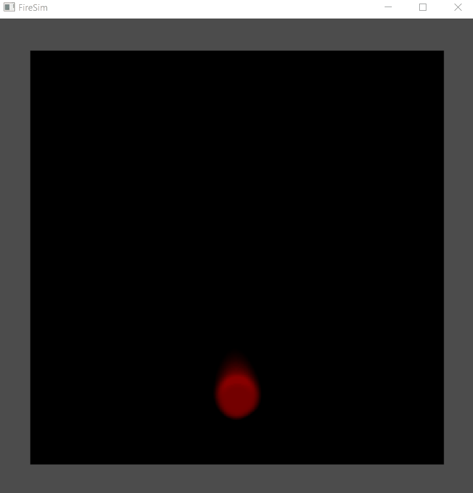
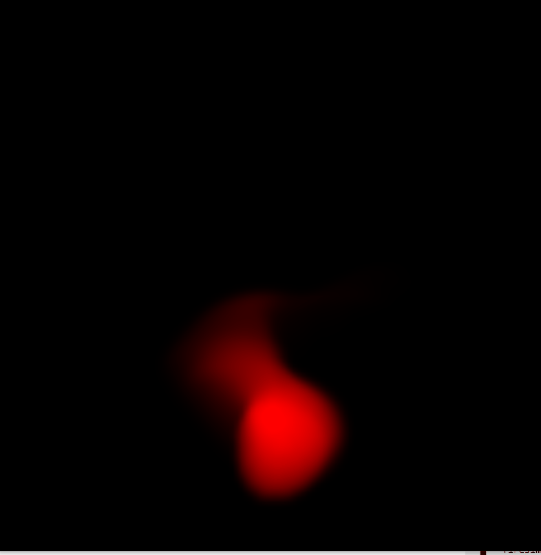
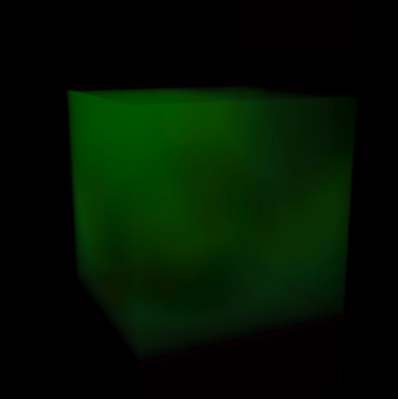
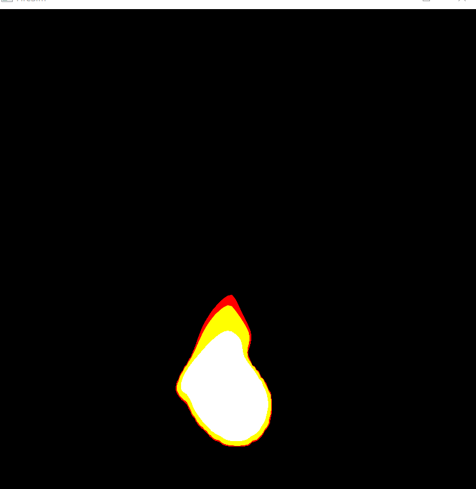
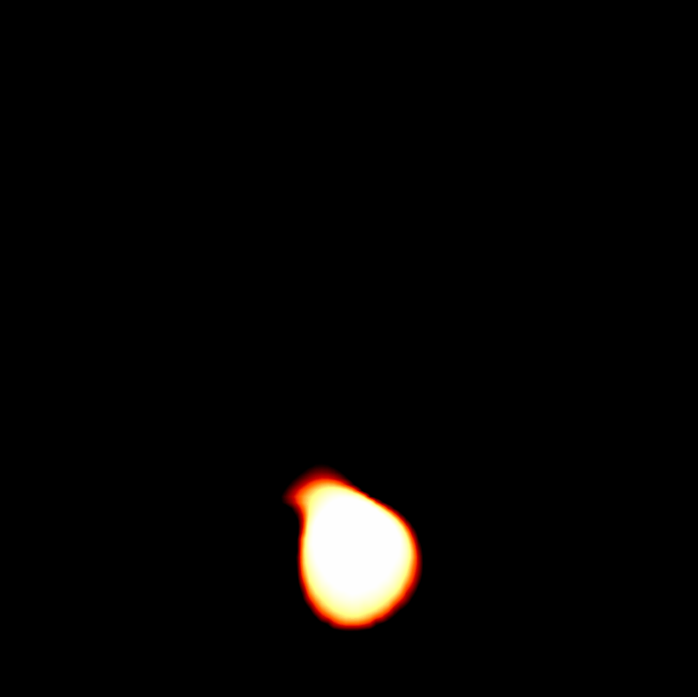

Final Report
Real-Time Fire Simulation
In our project we simulate real-time fire using a grid-based approach and fluid dynamics. We use the incompressible Navier-Stokes equations, which are broken down into 4 main components: advection, diffusion, external forces, and projection, to model the mechanics of the fluid. In order to visualize and successively test each of these components, initally we set up a 2D grid representing the fluid velocity field. To represent the fire, we added a fuel source which would be continuously generated in a circle at the bottom of the grid, with fuel depletion controlled by a reaction coordinate. Once we verified our calculations worked, we moved these computations from the CPU to the GPU and switched out our 2D textures for 3D ones. Next, we sampled images of real fire to obtain equations representing how the red, green, and blue color values varied with temperature. As a last step, we ray-trace through the 3D texture, accumulating temperature values along each ray, and use those quantities to calculate color. At a low performance cost, this allowed us to acheive relatively realistic looking fire effects in real-time.
Technical Approach
Set-Up
Our first step was setting up GLFW to use with the OpenGL library, which we referenced from this source, LearnOpenGL, for. The source also suggested using GLAD to manage the cumbersome work of loading the relevant OpenGL functions, which can vary depending on the OpenGL version used. We tested if our setup worked by opening an application window and getting a triangle to render to the screen. After this worked, we implemented basic camera controls that allowed the user to zoom in and out; the previously mentioned source had individual sections for each of these actions.
Working Fluid Sim in 2D
We referenced the GPU Gems 2D Fluid Sim to gain a better understanding of the physics behind fluid simulation. For our fluid, as well as the one introduced in the source, we assume an incompressible, homogeneous fluid, which we begin by representing as a 2D grid. In the code itself, we store a velocity and scalar pressure field. For each cell in the grid, we solve the Navier-Stokes equations, which can be broken down into advection, diffusion, external forces, and projection components. As we apply each component to our fluid, we visualize and test it, by first giving each cell in the grid an arrow representing the velocity at that point, and then later by adding a passive dye scalar which would be passively advected alongside the velocity.
After testing for advection in this way, we applied diffusion to our fluid's velocity field, yielding a field with non-zero divergence. We must correct for this using the Helmholtz-Hodge Decomposition Theorem, in which we subtract the gradient of the fluid's pressure to obtain a field with divergence-free velocity. To do this requires the following steps, which make up the projection component of our Navier-Stokes equation:
- First we obtain a Poisson-pressure equation by applying divergence on our velocity field from earlier
- We can solve for the fluid's pressure in this equation using Jacobian iteration
- Finally, we can apply the gradient and subtract from our earlier velocity field to obtain a field with zero divergence
 |
 |
GPU Implementation
After completing the Navier-Stokes fluid solver with CPU functions and verifying that we understood the mechanics of it, we began moving the implementation into GPU. We began by adding textures to store velocity, pressure, and divergence. Each step of the fluid solver was written as a separate GLSL frag shader and drawn into a framebuffer to perform the calculation. As a result, our program performance increased significantly; we were also able to increase the resolution of our 2D grid. While the CPU solver was only able to simulate up to a 100x100 grid without noticeable lag, the GPU solver could handle grid sizes of over 1500x1500.
As a next step, we replace the dye with a texture representing the fuel quantity of the flame; this is also called the reaction coordinate, and the equation representing how this quantity changes, with respect to the fluid's velocity field, is referenced from Nguyen's paper on physically based simulation of fire. This equation can be solved using the semi-Lagrangian stable fluids method described above. To simulate the fuel being "consumed" by the combustion reaction, we decrease it linearly at every cell. Near the bottom of the grid, we place a fuel "source" (a circle at the base of the flame) which is continuously refilled at every time step.
To increase the realism of our fire, we also began changing our current advection scheme to the MacCormack advection scheme described in the GPU Gems 3D Fluid Sim article. The current advection scheme we were using was unconditionally stable, but introduced unwanted numerical smoothing, causing the generated flame to look unnaturally smooth. In addition, we referenced the "Force Application" section of the GPU Gems 2D Fluid Sim article to apply a random Gaussian splat to our flame, as well as added random bits of wind, to acheive a more realistic fire effect from random external forces.
|  | |
 |
 |
Conversion from 3D to 2D
At this point, we began referencing the GPU Gems 3D Fluid Sim article to translate our 2D fluid computations to 3D. This involved adding an extra z-coordinate and tweaking our calculations in the GLSL frag shaders slightly to account for the extra dimension. Each shader, however, only operates on a single "slice", or 2D cross-section, of our 3D texture at a time. To generate a flame in 3D, we divide up our 3D texture into grid_size + 2 slices and iterate over each slice, performing the fluid computations for that particular slice in the GLSL shaders.
|  |  |
Raytracing
Having moved our implementation to 3D, we can now raytrace to estimate radiance. The rays accumulate temperatures throughout the 3D grid through a method inspired by the radiative transport equation, referenced from Nguyen's paper. The radiative transport equation integrates the overall spectral radiance over the ray. Nyugen's approach implemented this by recursively breaking up the ray into small segments and measuring the radiance from each.
Since our model strives to merely mimic the appearance of fire rather than simulate realistic physics, we used a simplified version of this approach. We chose to measure temperature values, where each ray would accumulate the total temperature over the slices of the 3D texture that it intersected. We chose to skip the radiance step of the equation, as our color conversions did not need an accurate radiance estimate.
Temperature to Color Conversion
We observed many images of fire for this project to reference our desired look and color. In particular, we referenced candles, as those flames were often more controlled and matched the shape of our small ball of flame. We noticed that the colors for these fires often smoothly transitioned based off of distance from the fuel source, and we came up with the idea to calculate red, green, and blue as polynomial equations that took in a scaled temperature value. Hotter temperature areas would be lighter, occasionally bluer, while cooler parts of the flame would be more red in appearance.
We studied multiple image references of candles and recorded the colors we observed. To calculate our equations, we took over 150 hexidecimal color samples and stored them in an Excel spreadsheet that plotted the red, green, and blue values of the colors separately. We coded the Excel spreadsheet to calculate three line of fit equations based off of our results for each color channel, and modified our color shader to output the final color based off the polynomials we found.
Early color results were slightly off, and our results were slightly off color. We manipulated the data to account for white cutoff, and continued to tweak our equations and take addtional samples until we got a flame that matched our desired look. We also tried out different color equation combinations, to get interesting results.
 |
 |  |
Problems Encountered
Since none of us were familiar with the physics of fire simulation prior to this project, we experienced some setbacks trying to understand and implement some of the equations in the paper. For example we originally tried to compute color by measuring radiance and converting it to color using Planck's equation, however, the documentation that we could find on how it was meant to be implemented was sparse. Ultimately, a lot of our problems were mitigated by good team work and frequent communication. To keep everyone on track, we held frequent meetings and worked together to research and teach each other what we understood. When one person was lost, another person would step in to help. When we were collectively stuck, we would discuss alternative approaches we could take that we could implement instead.
Lessons Learned
This project was a challenging learning experience for all of us, and helped us better understand fluid sim, GPU parallelization, and fire physics. We learned how to optimize our graphics program to run in real time and make use of shaders and textures to achieve the results we want. The scope of the project made it crucial that all team members were on the same page, and it stressed the need to help each other so that nobody would be left behind. Ultimately it was a difficult, but rewarding experience.
Results
Here is the final video for our project:
 |
 |
 |
References
- LearnOpenGL
- GPU Gems 2D Fluid Sim
- GPU Gems 3D Fluid Sim
- Physically Based Modeling and Animation of Fire
Contributions
Gracie Li
- Research
- Coded Velocity and acceleration for initial CPU grid structure
- Advection implementation
- Pressure implementation
- Projection implementation
- Moved diffuse, divergence to GLSL
- Moved gradient subtraction, and pressure to GLSL
- Implemented dye in GLSL
- Worked on MacCormack
- Reference sampling
- Converted shaders to 3D
Yuan Zhou
-
Research
- Coded grid structure and vector field representation for initial CPU grid structure
- Divergence implementation
- Gradient subtraction implementation
- Projection implementation
- Worked on MacCormack
- Converted shaders to 3D
- Programmed radiance to RGB shader
- Reference sampling
- Color equation tuning
- Programmed Excel spreadsheet to calculate color polynomials
Chris Zhang
- Research
- Integrated code and programmed visual representation for initial CPU structure
- Camera zoom and rotation
- Scene Toggle
- Set up code framework to transfer textures from CPU to GPU
- Setup and configured GLFW to use with the Open GL library
- Advection implementation
- Diffusion implementation
- Moved advection and diffuse to GLSL
- Converted textures to 3D and set up framework for 3D
- Alpha blending
- Color equation tuning
- Coded visual representations for velocity, bouyancy, and fuel fields
- Implemented raytracing
- Video editing and screencapping